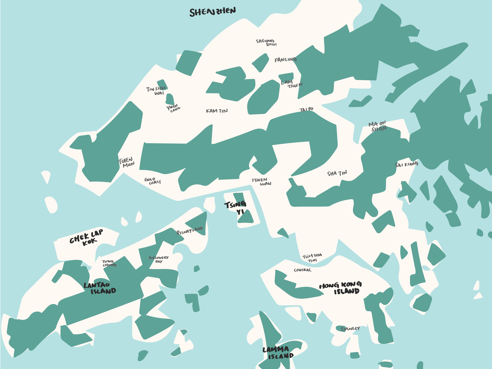
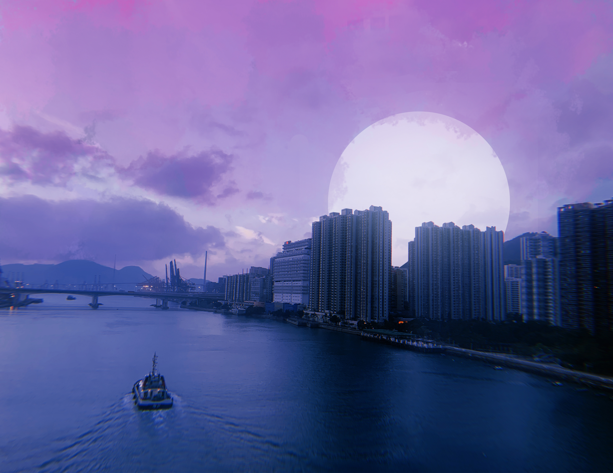
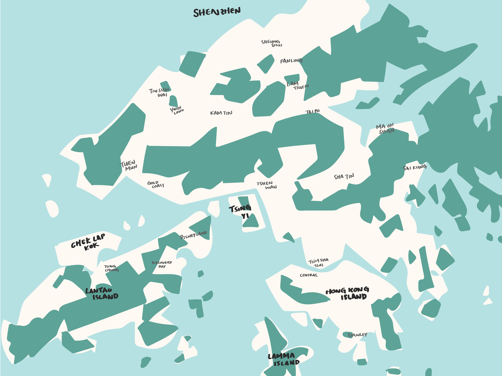
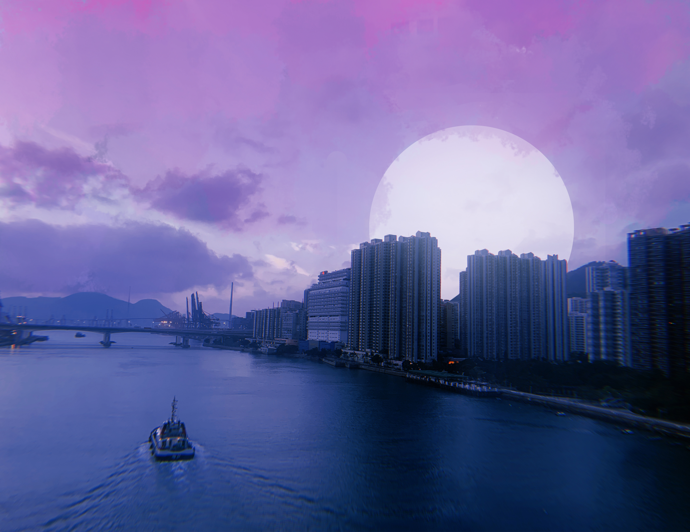
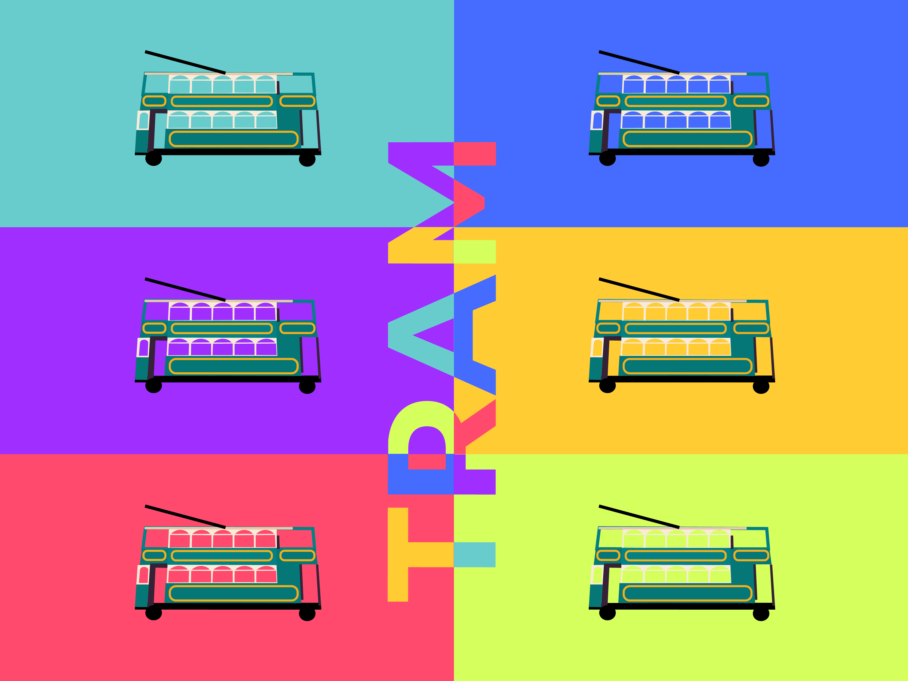
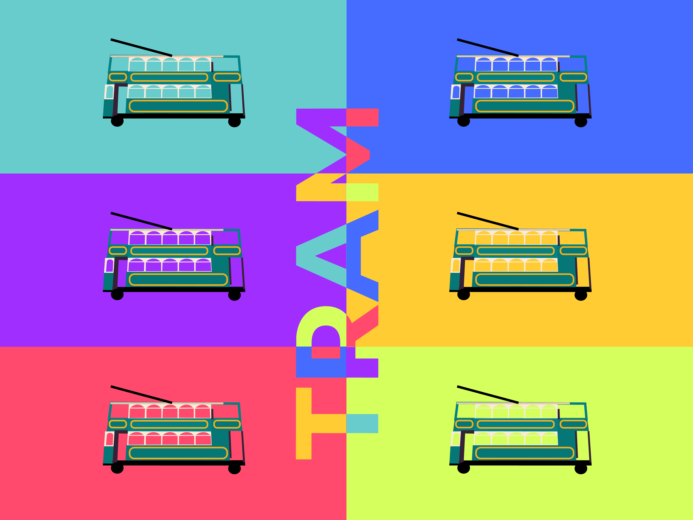
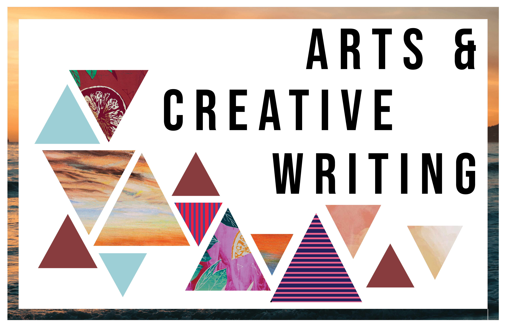
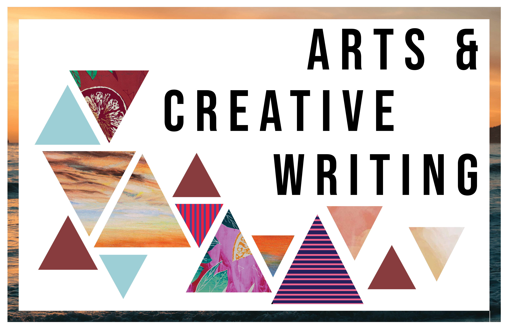
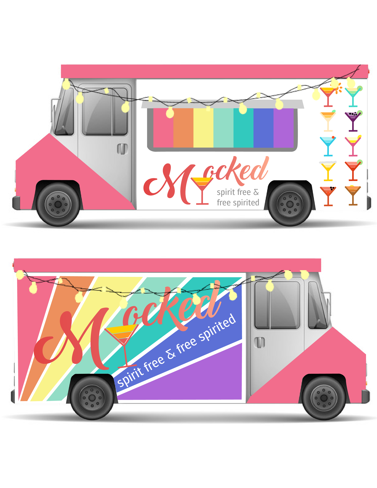
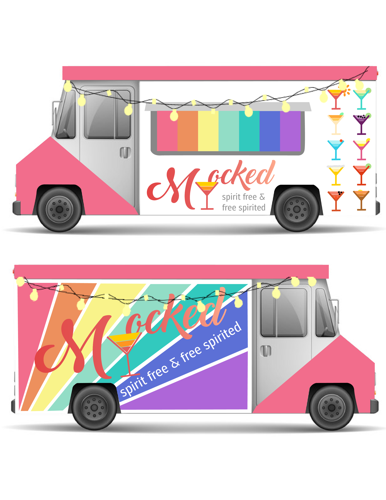

graphic design
HONG KONG MINI BOOK SAMPLE
A book created to highlight the beauty and cultures of Hong Kong- my hometown. Each spread utilizes a different style to demonstrate this city’s uniqueness in terms of food, historical landmarks, and its mix of Chinese traditions and Western influences.
Created with: Adobe Illustrator for graphics, Adobe Photoshop for drawing and photo editing
 




 


ART & LITERARY MAGAZINE SAMPLE
The theme of the 2018-2019 Art & Literary Magazine was based off of the word “contrast”. As Head Layout Editor, I created the cover and layout of the magazine reflecting its theme with only using the artworks of senior artists. I used contrasts in color and used the same color palette throughout the magazine. There is also contrast in land and sea from the cover, as well as bold and regular styles in typography.
Most importantly, we wanted to highlight the contrast in each senior artist’s work and showcase their uniqueness in how they express themselves in their preferred art medium.
Created with: Adobe InDesign


 

MARKETING/ADVERTISING FOOD TRUCK PROJECT
In this project, our group members decided to make an imaginary mocktail food truck company. I was in charge of the branding and advertising in this project. We wanted to create a tagline that captures the essence of our company: non-alcoholic beverages and our fun bohemian aesthetics. Therefore came my witty creation, “SPIRIT FREE & FREE SPIRITED”. For each special drink, I used wordplay from its original name (i.e., To Kill A Sunrise, instead of Tequila Sunrise) and designed small graphics to represent what the drink would look like.
Created with: Adobe Illustrator for graphics, Adobe Photoshop for drawing and photo editing
 


SCHOOL YEARBOOK COVER
I was honored to be selected to design the yearbook cover for the 2019-2020 school year. Since our school mascot is the tiger and we are famous for having a beautiful sunset, I decided to combine the two and design a cover with a unique cut-out effect and having the gradient on the sheet underneath so the colors could show through. Because of publishing issues, the original design was modified.
Created with: Adobe Illustrator for graphics, Adobe Photoshop for drawing and photo editing